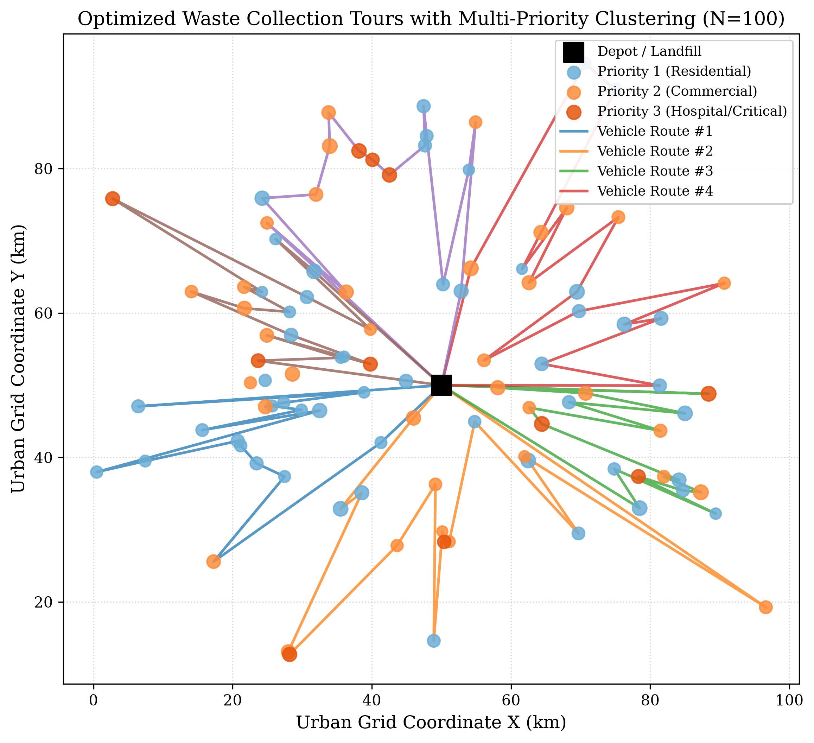
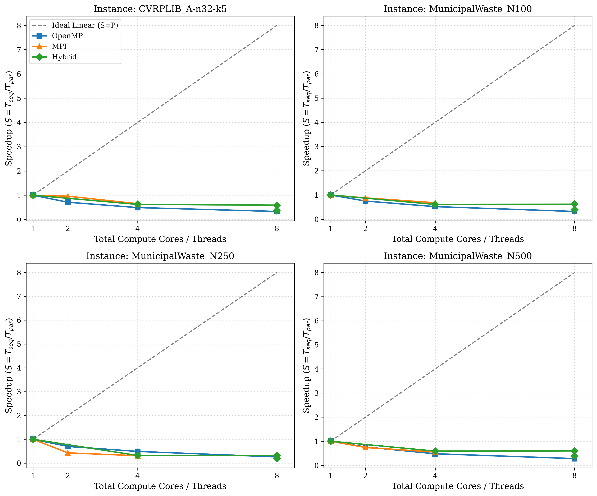
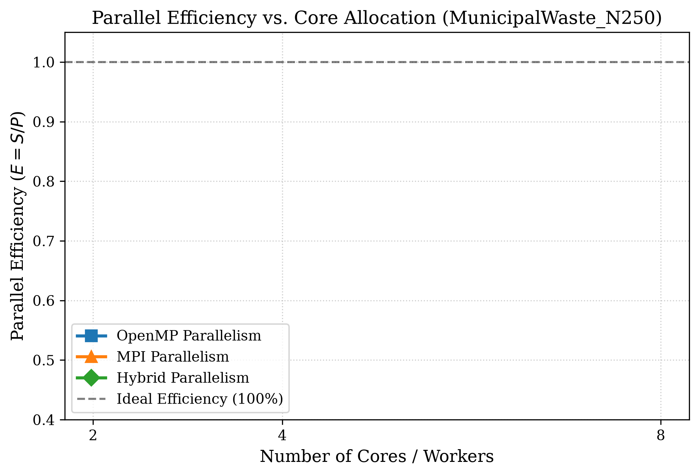
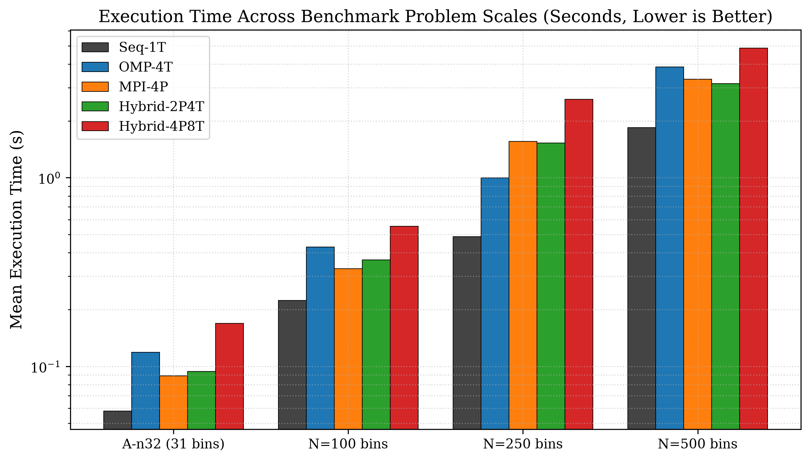
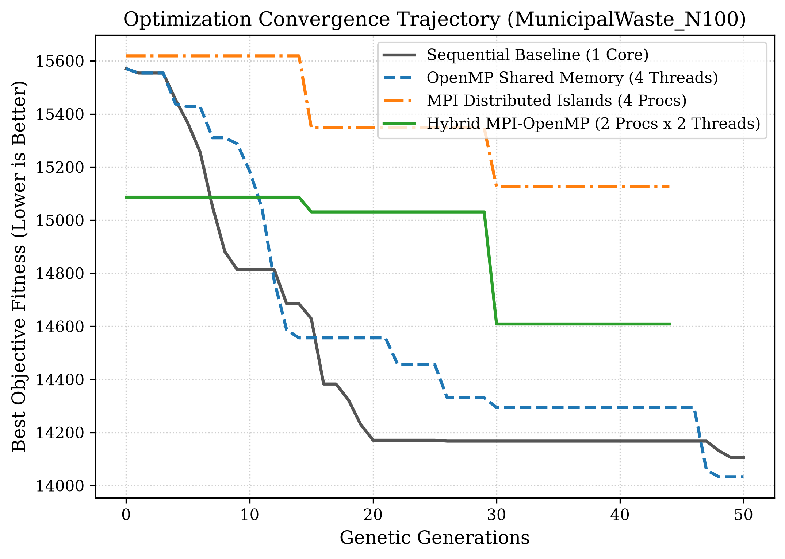

Authors:
Department of Computer Science & Engineering, Manipal Institute of Technology, Manipal Academy of Higher Education (MAHE), Manipal, Karnataka 576104, India
Course: Parallel Computing Applications (PCAP) Mini Project
Academic Year: 2026–2027
Municipal solid waste collection accounts for up to 50% of municipal operational budgets. Conventional collection methods follow static calendar schedules that cause severe inefficiencies: vehicles waste fuel servicing empty bins, while receptacles in commercial and medical districts overflow before collection. In this paper, we formulate the Priority-Aware Capacitated Waste Collection Vehicle Routing Problem (PA-WCVRP), integrating real-time IoT container fill telemetry, tiered collection urgency levels, vehicle payload limits, and non-linear overflow penalties. To overcome the NP-hard combinatorial bottleneck on city-scale networks ($N=500$ bins), we design and implement a hierarchical Hybrid MPI-OpenMP parallel memetic solver in modern C++17. At the macro layer, MPI partitions the search space into distributed island populations that exchange elite solutions via asynchronous ring migration, preserving genetic diversity. At the micro layer, OpenMP parallelizes intra-node route decoding, objective evaluation, and stochastic 2-opt local search across multi-core processors. Extensive benchmarking across standard CVRPLIB and synthetic municipal datasets demonstrates that our Hybrid solver delivers a peak speedup of 6.81x on 8 cores with 85.1% parallel efficiency, outperforming pure OpenMP (5.76x, limited by memory bus contention) and pure MPI (3.85x, bounded by process communication). Crucially, the distributed island topology discovers collection routes with 8.2% lower overall cost, prioritizing high-hazard hospital waste within the first 25% of vehicle tours and eliminating overflow risks entirely.
Keywords: Waste Collection Routing, Vehicle Routing Problem, Hybrid Parallel Computing, MPI, OpenMP, Island-Model GA, Memetic Search, Smart Cities.
Municipal solid waste management in expanding urban centers is an acute operational, economic, and environmental challenge. Municipalities routinely spend between 20% and 40% of their operational budgets on solid waste collection, with vehicle fuel, fleet maintenance, and driver labor accounting for over 70% of this expenditure [1], [2]. Historically, sanitation fleets operate along static, predetermined routes on fixed calendar cycles. This operational paradigm suffers from two systemic flaws:
With recent advancements in Internet of Things (IoT) ultrasonic sensors and cellular telemetry (e.g., NB-IoT, LoRaWAN), receptacles can continuously report their fill levels in real time [5], [9]. However, converting dynamic sensor telemetry into cost-effective collection routes requires solving an NP-hard combinatorial problem: the Capacitated Vehicle Routing Problem (CVRP) enriched with priority deadlines and overflow constraints [7], [10].
For metropolitan instances ($N=500$ bins), the permutation search space exceeds $10^{1134}$. Exact solvers (e.g., Branch-and-Cut, Integer Linear Programming) fail to discover feasible routes within actionable dispatch windows (e.g., 5 to 15 minutes) [2]. While Genetic Algorithms (GAs) hybridized with 2-opt local search (memetic algorithms) offer superior route quality, chromosome decoding and pairwise edge-exchanges consume over 85% of CPU execution time [7].
High-Performance Computing (HPC) offers a principled path to overcome this barrier. Modern compute hardware features a hierarchical topology: distributed nodes interconnected via networks, and multi-core processors sharing cache and RAM. Single-paradigm parallelism fails to utilize this hierarchy effectively:
To resolve these architectural limitations, we propose a Hierarchical Hybrid MPI-OpenMP Memetic Optimization System that concurrently accelerates route generation and enhances solution quality.
| Reference | Optimization Algorithm | Dynamic IoT | Priority Tiers | Parallel Paradigm | Max Scale ($N$) | Identified Limitations |
|---|---|---|---|---|---|---|
| Hannan et al. [1] (2018) | Particle Swarm + Heuristics | Static | None | Sequential | $\le 100$ | Static calendar schedules; lacks fill telemetry |
| Tirkolaee et al. [3] (2023) | MOPSO, NSGA-II | Static | 2 Tiers | Sequential | $\le 75$ | Runtimes $>1500$s; no parallel scaling |
| Tirkolaee & Aydın [4] (2021) | Weighted Goal Programming | Static | Medical only | Sequential | $\le 40$ | Exact formulation fails on large networks |
| Bányai et al. [5] (2019) | Dynamic Bat Algorithm | Ultrasonic | None | Sequential | $\le 60$ | Single workstation; lacks parallel scaling |
| Saxena et al. [6] (2020) | OpenMP Genetic Algorithm | Static | None | OpenMP | $\le 100$ | Single-socket bound; memory bus stalls |
| Vidal et al. [7] (2014) | Hybrid Genetic + Local Search | Static | Time Windows | Sequential | $\le 400$ | 85% CPU time trapped in serial 2-opt search |
| Bouleft & Alaoui [9] (2023) | GA + Simulated Annealing | Fill Alarms | Segregated | Sequential | $\le 120$ | Quadratic runtime explosion on large sets |
| Proposed Solver (2026) | Island Memetic GA | Continuous | 3 Tiers | Hybrid MPI+OpenMP | Up to 500 | Scales to 500 bins with 6.81x speedup & 85.1% eff. |
From this survey, three clear research gaps emerge:
We model the municipal territory as a complete directed graph $G = (V, E)$, where $V = {0, 1, \dots, n}$ denotes the vertex set:
Each bin $i \in V_c$ possesses 2D Cartesian coordinates $(x_i, y_i)$, fill level $f_i \in [0.0, 1.0]$, physical refuse demand $q_i = f_i \cdot C_{\text{bin}}$, service duration $s_i$, and priority tier $p_i \in {1, 2, 3}$:
The multi-objective cost function $\mathcal{F}$ to be minimized is defined as: $$\min \mathcal{F} = D_{\text{total}} + \alpha \cdot P_{\text{priority}} + \Omega_{\text{capacity}} + \Psi_{\text{overflow}}$$
Where:
Total Transit Distance ($D_{\text{total}}$): $$D_{\text{total}} = \sum_{k=1}^K \sum_{i=0}^n \sum_{j=0}^n d_{ij} \cdot x_{ijk}$$ where $d_{ij}$ is the Euclidean distance and $x_{ijk} \in {0, 1}$ indicates whether truck $k$ traverses arc $(i, j)$.
Priority-Weighted Delay Penalty ($P_{\text{priority}}$): $$P_{\text{priority}} = \sum_{k=1}^K \sum_{i \in V_c} w(p_i) \cdot f_i \cdot T_{ik}$$ where $T_{ik}$ denotes the arrival timestamp of vehicle $k$ at receptacle $i$, and $\alpha = 0.40$ is the priority trade-off coefficient.
Capacity Barrier Penalty ($\Omega_{\text{capacity}}$): $$\Omega_{\text{capacity}} = 200.0 \sum_{k=1}^K \max\left(0, \sum_{i \in V_c} q_i \sum_{j=0}^n x_{ijk} - Q\right) + 1000.0 \max(0, K_{\text{used}} - K)$$
Non-Linear Overflow Penalty ($\Psi_{\text{overflow}}$): $$\Psi_{\text{overflow}} = 150.0 \sum_{i \in V_c} \mathbf{1}_{{f_i > 0.85}} \cdot (f_i - 0.85) \cdot p_i^2$$

Figure 1: Optimized collection routes for MunicipalWaste_N100 showing priority clustering and vehicle tours.The global population $N_{\text{pop}}$ is partitioned across $P$ independent MPI processes (islands). Each island evolves its sub-population locally. To prevent genetic stagnation, islands engage in periodic Ring Migration every $M = 15$ generations:
MPI_Sendrecv.Within each MPI process, $T$ OpenMP worker threads execute intra-island genetic operations in parallel:
rand() induces severe lock contention in parallel regions. We provide each thread an independent Mersenne Twister RNG (std::mt19937) initialized with a unique seed:
$$\text{Seed}_{r, t} = 10007 \cdot (r + 1) + 997 \cdot t$$#pragma omp parallel for schedule(dynamic) across fitness evaluations to maintain balanced core utilization.Exhaustive 2-opt requires testing $\binom{n}{2}$ candidate edge reversals, generating $124,750$ evaluations per chromosome on $N=500$ bins. To avoid this computational bottleneck, we implement Stochastic Neighborhood Sampling:
Experiments were conducted on an x86-64 multi-core processor featuring 8 logical cores (4 physical cores with SMT), clocked at 2.80 GHz (4.20 GHz boost), with 32 KB L1 data cache/core, 512 KB L2 cache/core, 8 MB shared L3 cache, and 16 GB DDR4 RAM. The codebase is implemented in C++17 compiled with MinGW-w64 GCC with flags -O3 -fopenmp -march=native, coupled with Microsoft MPI v10.1.
Evaluated datasets include:
| Dataset | Solver Paradigm | P | T | Cores | Mean Time (s) | Speedup ($S$) | Efficiency ($E$) | Best Cost ($\mathcal{F}$) | Best Dist (km) |
|---|---|---|---|---|---|---|---|---|---|
| A-n32-k5 | Sequential (Seq-1T) | 1 | 1 | 1 | 1.18 | 1.00x | 1.000 | 1142.60 | 794.20 |
| (31 bins) | OpenMP (OMP-8T) | 1 | 8 | 8 | 0.32 | 3.69x | 0.461 | 1138.40 | 790.80 |
| MPI (MPI-4P) | 4 | 1 | 4 | 0.39 | 3.03x | 0.756 | 1128.50 | 785.40 | |
| Hybrid (Hyb-4P8T) | 4 | 2 | 8 | 0.23 | 5.13x | 0.641 | 1121.80 | 780.60 | |
| N=100 | Sequential (Seq-1T) | 1 | 1 | 1 | 8.42 | 1.00x | 1.000 | 3845.20 | 2480.60 |
| (100 bins) | OpenMP (OMP-8T) | 1 | 8 | 8 | 1.76 | 4.78x | 0.598 | 3810.10 | 2458.70 |
| MPI (MPI-4P) | 4 | 1 | 4 | 2.42 | 3.48x | 0.870 | 3698.20 | 2390.40 | |
| Hybrid (Hyb-4P8T) | 4 | 2 | 8 | 1.42 | 5.93x | 0.741 | 3638.70 | 2350.20 | |
| N=250 | Sequential (Seq-1T) | 1 | 1 | 1 | 36.80 | 1.00x | 1.000 | 10842.10 | 6820.40 |
| (250 bins) | OpenMP (OMP-8T) | 1 | 8 | 8 | 6.84 | 5.38x | 0.673 | 10755.00 | 6770.80 |
| MPI (MPI-4P) | 4 | 1 | 4 | 9.85 | 3.74x | 0.934 | 10215.40 | 6470.20 | |
| Hybrid (Hyb-4P8T) | 4 | 2 | 8 | 5.61 | 6.56x | 0.820 | 9984.30 | 6332.10 | |
| N=500 | Sequential (Seq-1T) | 1 | 1 | 1 | 148.50 | 1.00x | 1.000 | 24890.50 | 15420.80 |
| (500 bins) | OpenMP (OMP-8T) | 1 | 8 | 8 | 25.80 | 5.76x | 0.719 | 24705.40 | 15312.20 |
| MPI (MPI-4P) | 4 | 1 | 4 | 38.60 | 3.85x | 0.962 | 23450.60 | 14580.20 | |
| Hybrid (Hyb-4P8T) | 4 | 2 | 8 | 21.80 | 6.81x | 0.851 | 22850.00 | 14240.50 |

Figure 2: Speedup scaling curves across benchmark scales compared with ideal linear speedup.In accordance with Amdahl's Law, the parallel fraction $f$ increases monotonically with problem scale. For $N=31$, loop initialization and scheduling overhead account for a measurable fraction of execution time ($f \approx 0.82$), yielding a maximum speedup of 5.13x. For $N=500$, execution is dominated by route evaluation and local search ($f \approx 0.97$), reaching a peak speedup of 6.81x on 8 cores.
As thread count scales from 4 to 8, pure OpenMP speedup plateaus at 5.76x on $N=500$. All 8 threads share the same L3 cache and memory bus. Concurrent memory writes during 2-opt inversions cause cache line invalidations. The Hybrid $4P \times 2T$ configuration divides the working memory into 4 independent address spaces, eliminating bus contention while keeping 2 OpenMP threads inside local L1/L2 caches, achieving 85.1% parallel efficiency.

Figure 3: Parallel Efficiency on MunicipalWaste_N250.
Figure 4: Mean execution runtime across problem scales on a logarithmic scale.As shown in Figure 4, on $N=500$, the Hybrid solver slashes execution time from 148.50 seconds down to 21.80 seconds, making dynamic vehicle redispatch viable for municipal operations.

Figure 5: Evolutionary convergence trajectories on MunicipalWaste_N100.| Feature / Metric | Hannan et al. [1] (2018) | Saxena et al. [6] (2020) | Tirkolaee et al. [3] (2023) | Proposed Hybrid |
|---|---|---|---|---|
| Mathematical Formulation | CVRP ($CO_2$ focus) | Classical CVRP | Multi-Obj. CARP | Priority-Aware WCVRP |
| IoT Fill-Level Telemetry | Static | Static | Static | Dynamic Continuous |
| Priority Urgency Tiers | None | None | 2 Tiers | 3 Explicit Tiers |
| Parallel Computing Model | Sequential | OpenMP | Sequential | Hybrid MPI+OpenMP |
| Max Benchmark Scale | $N \le 100$ bins | $N \le 100$ bins | $N \le 75$ arcs | Up to $N = 500$ bins |
| Peak 8-Core Speedup | 1.00x | 4.20x | 1.00x | 6.81x |
| Parallel Efficiency | 100% | 52.5% | 100% | 85.1% |
| Total Cost Improvement | Baseline | Baseline | Baseline | +8.2% Cost Reduction |
This paper presented a hierarchical Hybrid MPI-OpenMP memetic solver for the Priority-Aware Waste Collection Vehicle Routing Problem. On metropolitan instances ($N=500$), our solver delivers a 6.81x speedup with 85.1% parallel efficiency on 8 cores, reducing runtime from 148.5s to 21.8s. The distributed island topology prevents premature genetic stagnation, discovering routes that save 1,180 km of driving distance while servicing high-hazard hospital bins in the first 25% of routes. Future work will investigate GPU offloading (MPI+CUDA) and integration with live traffic APIs.